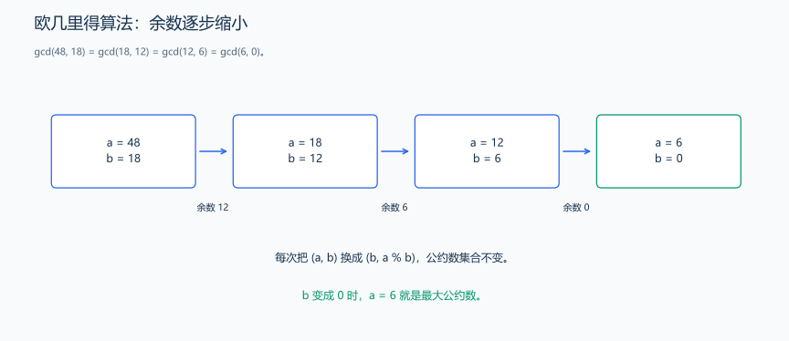
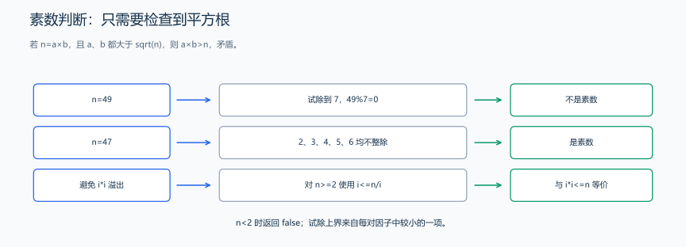
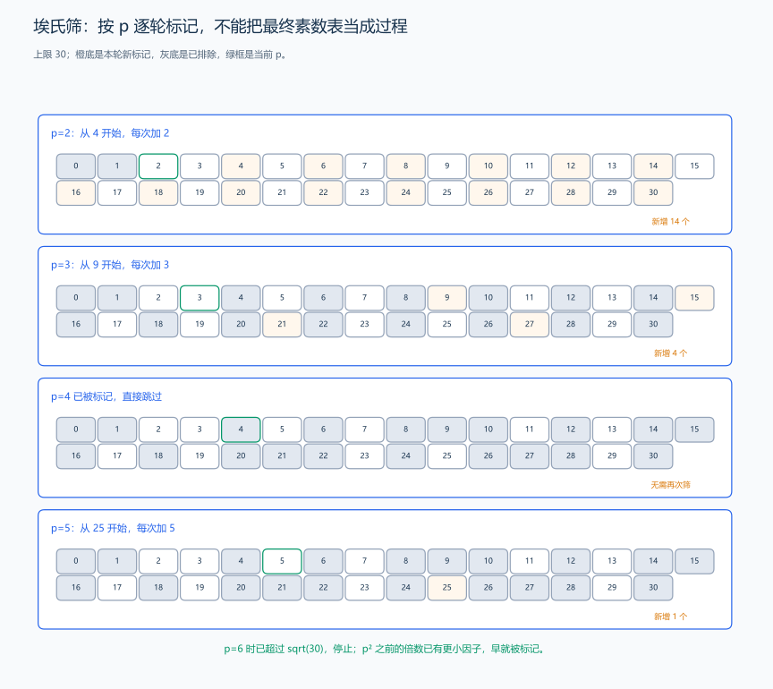
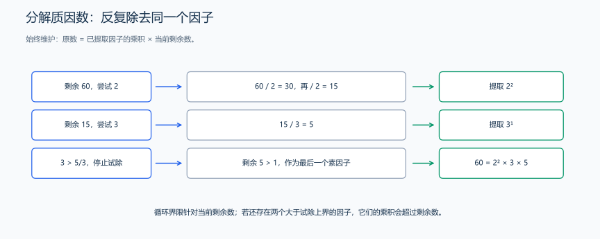

（五） 基础数论
接下来处理整数本身的结构：哪些数能整除、怎样找公约数、哪些数是质数。先用枚举写出判断，再利用整除性质缩小检查范围。
1. 最大公约数与最小公倍数
欧几里得算法利用：
\[ \gcd(a,b) = \gcd(b,a \bmod b) \]
下面要求 a >= 0、b >= 0：
题目原文（自拟）： 给定两个非负整数，求最大公约数；额外约定两个数都为 0 时返回 0。
分析： 每次用 (b,a%b) 替换 (a,b)，公约数集合不变，直到余数为 0。

每一步都不改变最大公约数，而第二个参数不断缩小，直到变成 0。
证明公约数集合没有变化。 写成带余除法 \(a=qb+r\)。若 d 同时整除 a、b，就整除 \(r=a-qb\)；若 d 同时整除 b、r，就整除 \(a=qb+r\)。因此两对数拥有相同公约数，也就拥有相同最大公约数。
每步余数满足 0 <= r < b，第二个参数严格变小，最终到达 0；此时 gcd(a,0)=a。这同时给出了正确性和终止理由。交换顺序或一开始 a<b 都不影响算法，第一步会把较大值转到合适位置。
最小公倍数公式也可以从质因数指数理解：最大公约数取两数每种质因子的较小指数，最小公倍数取较大指数，两者相乘恰好是 a*b。代码先用 a 除以 gcd(a,b)，再与 b 相乘，让中间值比先计算 a*b 更小。
long long gcdEuclid(long long a, long long b) {
// gcd(a,b) 与 gcd(b,a%b) 相同，余数逐步减小。
while (b != 0) {
long long remainder = a % b;
a = b;
b = remainder;
}
return a;
}时间复杂度为对数级；本模板约定 gcd(0, 0) = 0。C++17 可以直接使用 <numeric> 中的 std::gcd。
样例与解释： gcdEuclid(48,18) 的过程为 (48,18)→(18,12)→(12,6)→(6,0)，返回 6；gcdEuclid(0,5) 返回 5。额外空间 \(O(1)\)。
当 a、b 为正整数时：
\[ \operatorname{lcm}(a,b)=\frac{a}{\gcd(a,b)}\times b \]
计算 a/gcd(a,b)*b 时，先除去公因子，再相乘，中间数比直接计算 a*b 小。结果较大时，和前面的累计和一样，用 long long 保存。
练习题： 洛谷 P1029 — 最大公约数和最小公倍数问题。
2. 素数判断
如果整数 n >= 2 有非平凡因数，至少有一个因数不超过 \(\sqrt n\)：
题目原文（自拟）： 给定整数 n，判断它是否为素数，返回 bool。素数是大于 1 且只有 1、自己两个正因数的整数。
为什么试到平方根就够了？ 若合数 n=a*b，且两个因子都大于 \(\sqrt n\)，乘积就会大于 n，矛盾。因此至少有一因子不超过平方根。在这个范围找不到非平凡因子，就能排除所有合数分解。
例如 49=7×7，因子恰好落在平方根上，所以检查到 i=7 时仍要试除，循环使用 <=；只写 < 就会在检查 7 之前停止。1 的正因数只有一个，不符合素数定义；负数和 0 也在进入循环前排除。遇到因子可以立即返回失败，而素数会执行到范围结束，所以用它估计最坏次数。

每对因子至少有一个不超过平方根。
bool isPrime(long long n) {
if (n < 2) {
return false;
}
// 有合数因子时，至少一个不超过平方根；用除法避免平方溢出。
for (long long factor = 2; factor <= n / factor; ++factor) {
if (n % factor == 0) {
return false;
}
}
return true;
}使用 factor <= n / factor 避免 factor * factor 溢出。时间 \(O(\sqrt n)\)；要判断很多小范围整数时，筛法更合适。
样例与解释： isPrime(1) 为 false；isPrime(17) 为 true；isPrime(49) 在检查因子 7 时得到 false。额外空间 \(O(1)\)。
练习题： 洛谷 P1036 — 选数（结合枚举或 DFS）。
3. 埃氏筛
如果 p 是素数，就把它的倍数标为合数。小于 p * p 的倍数已经会被更小的素因子处理。
题目原文（自拟）： 给定非负上限 n，建立下标 0 到 n 的素数标记表；位置 x 为 true 当且仅当 x 是素数。上限应符合题目的内存与时间限制。

上限 30 时，p=2 从 4 开始划去倍数，p=3 从 9 开始继续划去倍数；轮到 p=4 时发现它已经不是素数，整轮跳过；p=5 从 25 开始，只新排除 25。到 p=6 已有 p²>30，停止外层循环。图同时列出“这一轮新增排除”与“之前已排除”，不能把后者重复算成新的合数。
为什么从 p² 开始，而不是从 2p？ 小于 p² 的倍数可以写成 p*k，其中 2 <= k < p。k 必有一个比 p 小的素因子，这个素因子先前已经把 p*k 标成合数。因此，从 p² 开始不会遗漏合数，却能减少重复标记。
以筛到 30 为例，先用 2 标记 4、6、8、…、30；再用 3 从 9 开始标记，6 已被 2 处理；4 已是合数，不再用它启动新一轮；到 5 从 25 开始。大于平方根的合数仍然有一个不超过平方根的素因子，因此外层也只需到平方根。
筛法一次计算 0 到 n 的素数标记，之后访问 prime[x] 就能查到这一范围里 x 的答案。它适合反复查询同一批数；只判断一个数时，前面的试除法会省去整张标记表。
#include <vector>
using namespace std;
vector<bool> primeSieve(int n) { // n >= 0
vector<bool> prime(static_cast<size_t>(n) + 1, true);
prime[0] = false;
if (n >= 1) {
prime[1] = false;
}
for (int p = 2; p <= n / p; ++p) {
if (prime[p]) {
// 更小的倍数已有更小素因子，从 p² 开始标记。
for (long long multiple = 1LL * p * p; multiple <= n; multiple += p) {
prime[static_cast<size_t>(multiple)] = false;
}
}
}
return prime;
}得到 prime[x] 后可以 \(O(1)\) 查询 x 是否为素数。筛的时间为 \(O(n \log\log n)\)，空间为 \(O(n)\)。
样例与解释： n=10，表中为 true 的位置是 2、3、5、7；0、1 从初始化时就排除。
练习题： 洛谷 P3383 — 线性筛素数（规模较大，可继续学习线性筛）。
4. 试除法分解质因数
题目原文（自拟）： 给定正整数 n，按素因子从小到大返回 (素因子,指数) 列表；n=1 时返回空表。
分析： 从 2 开始尝试除数，遇到因子就连续除尽并统计指数。试除结束时若仍剩余大于 1 的数，它就是最后的素因子。
为什么试除的合数不会被记为素因子？ 到除数 p 时，比它小的因子都已经被除尽。如果 p 是合数，它含有更小的素因子；剩余数已不含这些因子，就不可能再被 p 整除。因此真正被加入结果的除数一定是素数，虽然循环没有单独调用判素函数。
手算 60：除以 2 两次，得到剩余数 15，记录 (2,2)；再除以 3 一次，剩余数 5，记录 (3,1)。此时后续除数的平方已大于剩余数，退出循环，把剩余 5 记为 (5,1)。
最后的剩余数若大于 1 就一定是素数：若它还能分解成两个非平凡因子，至少一个不超过它的平方根，应当已经被前面的试除过程找出，形成矛盾。这里循环上界随剩余 n 缩小，但最坏复杂度仍按最初输入值的平方根估计。

60 先除去两次 2，再除去一次 3，最后剩余的 5 是素数。循环检查的是不断缩小的剩余数。
#include <utility>
#include <vector>
using namespace std;
vector<pair<long long, int>> factorize(long long n) { // n >= 1
vector<pair<long long, int>> result;
for (long long p = 2; p <= n / p; ++p) {
if (n % p == 0) {
// 连续除去同一个素因子，记录它在分解中的指数。
int exponent = 0;
do {
n /= p;
++exponent;
} while (n % p == 0);
result.push_back({p, exponent});
}
}
if (n > 1) {
result.push_back({n, 1});
}
return result;
}例：60 = 2² × 3 × 5，结果为 [(2, 2), (3, 1), (5, 1)]。1 没有质因数，返回空表；最坏时间 \(O(\sqrt n)\)。
练习题： 洛谷 P1075 — 质因数分解。